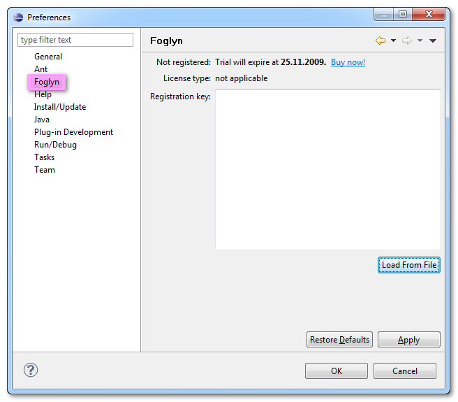
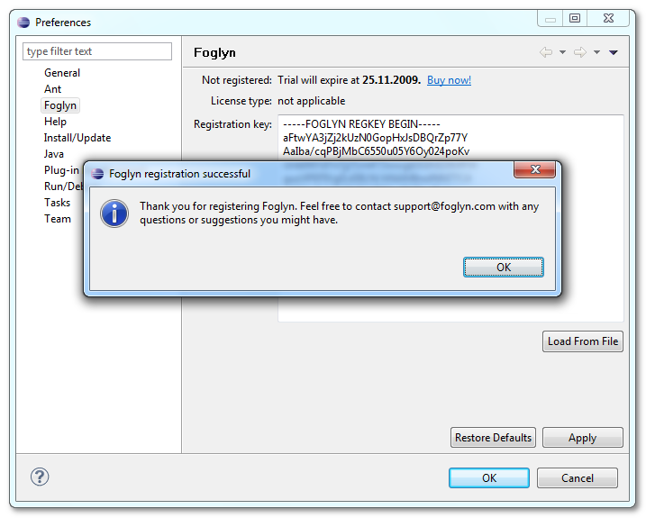

Foglyn User Guide > Registering Foglyn

Registering Foglyn
After you Buy Foglyn from the Foglyn web site, you will receive the registration key. To activate Full version of Foglyn all you need to do is to enter your Registration Key into Foglyn preferences page.
This page is available in general Preferences dialog, which can be opened from Window > Preferences menu (location may differ on Mac OS X and Linux). After Preferences dialog opens, select Foglyn in the tree on the left side of dialog:

Click Load From File button and browse for your registration key. After you click Apply or OK button, Foglyn will use supplied registration key and switch to Full Version.
